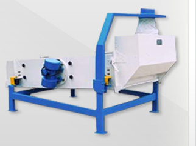
PrelimpiezaTQLZ
Máquina de seguridad aire/zaranda
Limpieza y limpieza de seguridad en un solo equipo. Retira impurezas grandes, finas y polvo inmediatamente antes del envasado.
Capacidad 9 ~ 15 t/h
Ver ficha
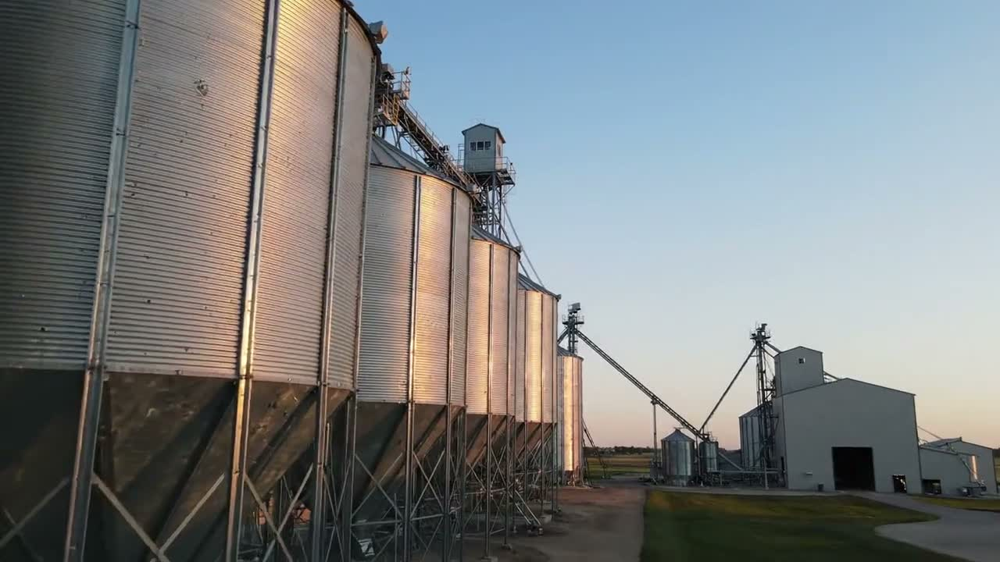
Desde 1983 Representante oficial GREEN HORSE
Fundada en 1983, TERRASOL S.A. representa, importa y vende maquinaria agroindustrial y equipos procedentes de Asia, Brasil y Europa. Desde 2004 representamos la línea GREEN HORSE en Uruguay y el Mercosur: arroz, trigo, soja, maíz, leguminosas y raciones.
Quiénes somos
Desde 2004 comercializamos Maquinaria GREEN HORSE de procedencia China con tecnología Japonesa y Alemana, para las industrias de arroz, trigo, soja, maíz, leguminosas y raciones.
Con amplia presencia en Mercosur hemos ampliado nuestro mercado ofreciendo soluciones en el sector del Agro a nivel de América Latina y Europa.
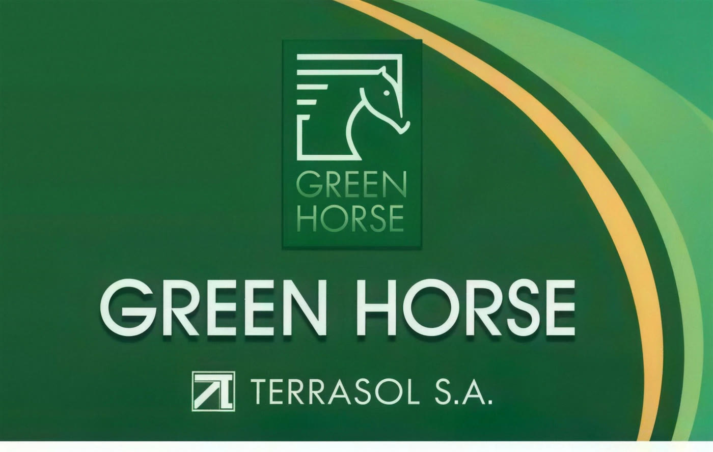
01 / 10 · Almacenaje
Silos galvanizados de fondo cónico o plano y silos de acero inoxidable. El grano se recibe, se pesa y queda almacenado en condiciones controladas hasta el inicio del proceso.
El recorrido del grano
Cada etapa del proceso tiene su equipo. Recorrelas y llegá directo a los que necesitás.
Silos galvanizados de fondo cónico o plano y silos de acero inoxidable. El grano se recibe, se pesa y queda almacenado en condiciones controladas hasta el inicio del proceso.
Ver equipos de esta etapaElevadores de cangilones, redlers, roscas helicoidales y cintas transportadoras conectan cada etapa. Un buen layout de transporte define el rendimiento real de la planta.
Ver equipos de esta etapaZarandas y columnas de aire retiran impurezas más grandes y más chicas que el grano, además del polvo. Es la etapa que protege todos los equipos que vienen después.
Ver equipos de esta etapaLos stoners usan succión y gravedad para eliminar piedras, partes metálicas y todo contaminante de peso específico mayor al del grano. Sin esta etapa, se destruyen los rodillos.
Ver equipos de esta etapaRodillos de goma enfrentados abren el grano de arroz sin quebrarlo. El tubo móvil acompaña el desgaste de los rodillos para mantener parejo el porcentaje de quebrado.
Ver equipos de esta etapaMesas oscilantes con alvéolos separan el arroz descascarado del que todavía tiene cáscara, y lo devuelven al descascarador. Menos marineros en el producto final.
Ver equipos de esta etapaBlanqueadores verticales y horizontales, y pulidoras de agua, retiran el afrechillo trabajando a baja temperatura y presión controlada para reducir el grano partido.
Ver equipos de esta etapaZarandas clasificadoras y trieurs de alta precisión separan por tamaño. Los cilindros se fabrican con el alvéolo adecuado a la muestra real del cliente.
Ver equipos de esta etapaBancos de cilindros y plansifters trabajan en pasadas sucesivas: se muele, se tamiza, se purifica y se vuelve a moler hasta obtener la harina.
Ver equipos de esta etapaBalanzas de flujo y de embolse electrónicas, embolsadoras al vacío, cosedoras, robots de enfardado y paletizado, y etiquetadoras cierran el ciclo.
Ver equipos de esta etapaLíneas de producto
Proyectamos la planta entera: almacenaje, transporte, proceso, selección, pesaje y envasado.
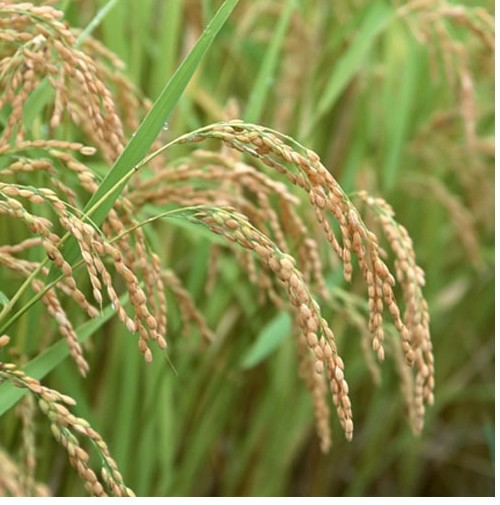
Línea completa de molino arrocero: desde la prelimpieza y el despedrado hasta el blanqueado, el clasificado y la selección electrónica.
Ver equipos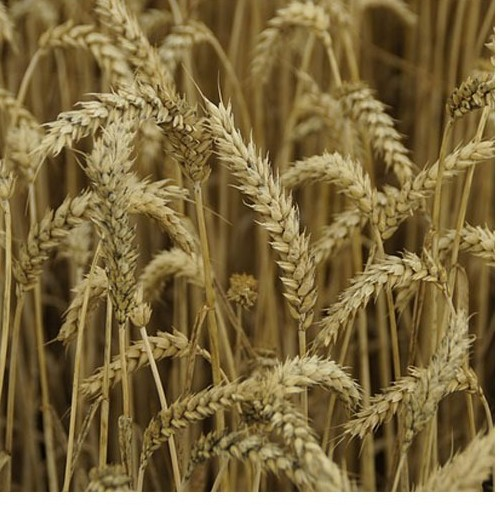
Molienda de trigo: limpieza, plansifters de tamizado, bancos de cilindros, purificadores densimétricos y filtros de manga.
Ver equipos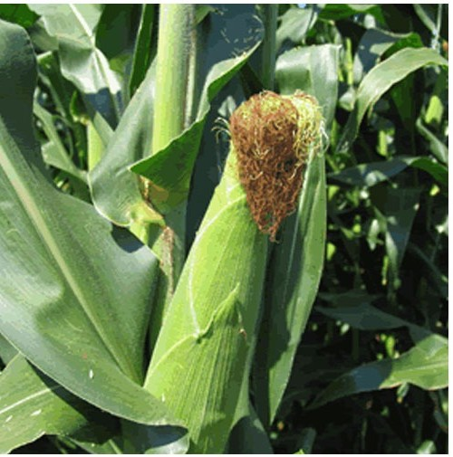
Equipamiento de limpieza, clasificación, almacenaje y envasado adaptado al maíz y a las fábricas de raciones.
Ver equipos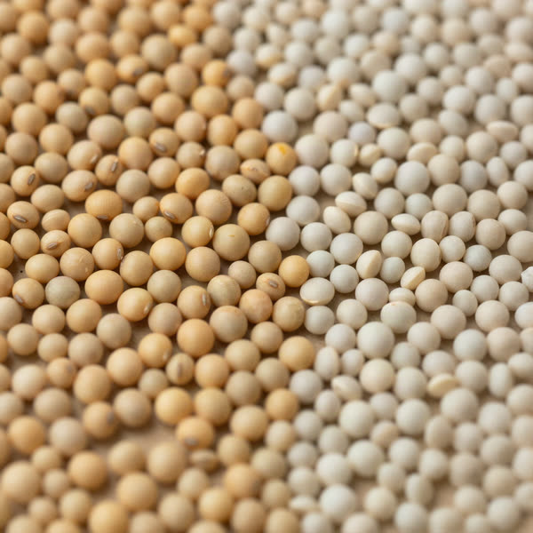
Soja, poroto y leguminosas: despedrado, clasificación por tamaño y selección óptica, con equipos configurados a la muestra.
Ver equiposEquipos destacados
Una selección de la línea GREEN HORSE. En el catálogo completo vas a encontrar todos los equipos con sus fichas técnicas, filtrables por línea y por etapa del proceso.

PrelimpiezaTQLZ
Limpieza y limpieza de seguridad en un solo equipo. Retira impurezas grandes, finas y polvo inmediatamente antes del envasado.
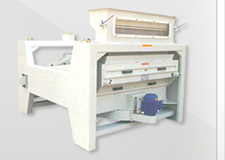
PrelimpiezaTQLM 125
Prelimpieza compacta bajo norma ISO 9001. Elimina impurezas grandes y pequeñas, semillas chicas y polvo en un solo paso.
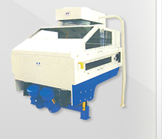
DespedradoTQSF
Eliminador de piedras accionado por motores vibradores. Modelos para todas las necesidades, de 5 a 15 t/h.
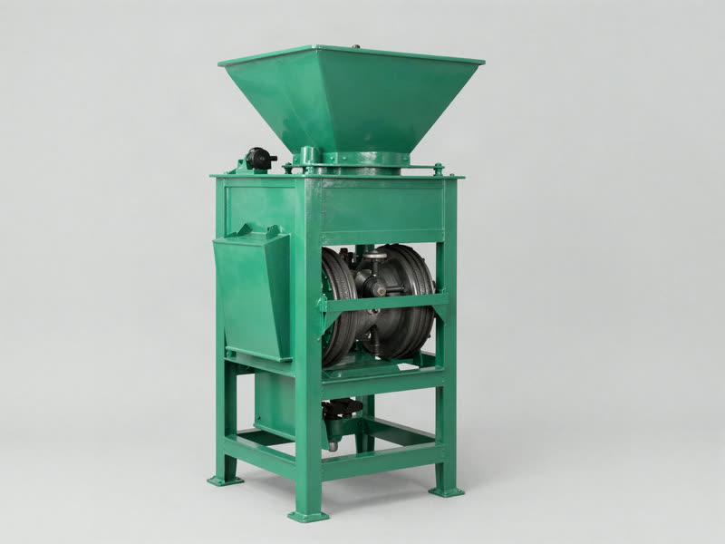
DescascaradoMLGQ 25
Descascarador con tubo móvil que acompaña el desgaste de los rodillos, manteniendo bajo el porcentaje de grano quebrado.
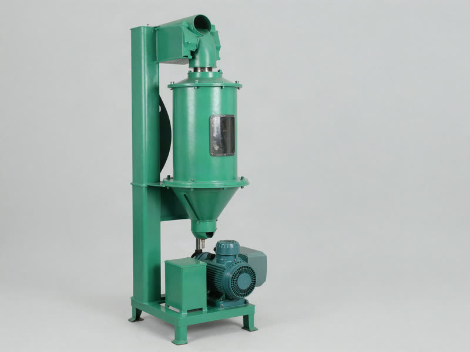
BlanqueadoMNML 40
Aceros y rulemanes de origen alemán, presión controlada y menor calentamiento del grano. Garantiza el menor porcentaje de quebrados.
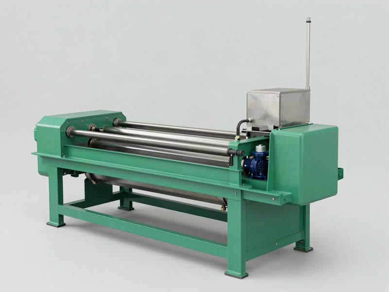
BlanqueadoCM
Nueve modelos de 1 a 5 t/h. El pulidor doble hace el trabajo de tres pulidores convencionales usando 70 cv en vez de 120.
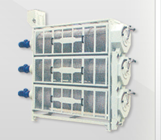
ClasificadoMDJY 50×3
Se fabrica a medida: enviamos muestras de su producto para definir el alvéolo exacto de los cilindros de clasificación.
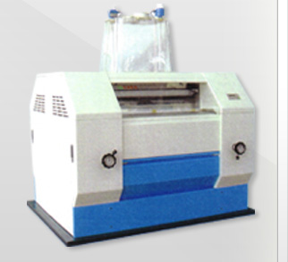
MoliendaMSD
Diseñado en CAD, cuerpo de acero inoxidable y base de acero fundido sólido. Rulemanes SKF, neumática SMC y electrónica Siemens.
Lo que hacemos
Maximizamos la capacidad de producción de los granos, todo ello con una buena relación coste-rendimiento.
Proyectamos la distribución completa de la planta: flujo del grano, ubicación de equipos, elevadores y transportes, previendo capacidad futura y espacio de mantenimiento.
Acompañamiento técnico en la selección del equipo según el tipo de grano, la variedad y el rendimiento buscado. Enviamos muestras de producto para configurar los equipos a medida.
Montaje y puesta en marcha de equipos individuales o de la línea completa, desde el silo de recepción hasta la máquina de envasado.
Seguimiento después de la instalación, ajustes de proceso y soporte durante la vida útil del equipo.
Amplio stock de repuestos y accesorios en plaza que nos permite brindar asistencia rápida y minimizar la parada de planta.
Desde almacenamiento y transporte de granos hasta prelimpieza, clasificación, selección óptica, pesaje, embolsado, paletizado y etiquetado.
Marcas representadas
Importamos y representamos maquinaria de Asia, Brasil y Europa para cubrir la planta de punta a punta.
China · tecnología japonesa y alemana · representada desde 2004
Línea principal de TERRASOL desde 2004. Maquinaria completa para molinos de arroz y trigo: prelimpieza, despedrado, descascarado, separado, blanqueado, clasificado y molienda. Fabricación con corte láser, aceros y rulemanes de origen alemán, y control electrónico.
España · Ciempozuelos, Madrid
Fabricante español con más de 25 años diseñando maquinaria industrial: balanzas y sistemas de pesaje, ensacadoras automáticas, llenadoras de big bag, paletizadores de arrastre, robóticos y cartesianos, y enfardadoras. Sectores alimentario, agroalimentario, nutrición animal, materiales de construcción, farmacéutico y químico.
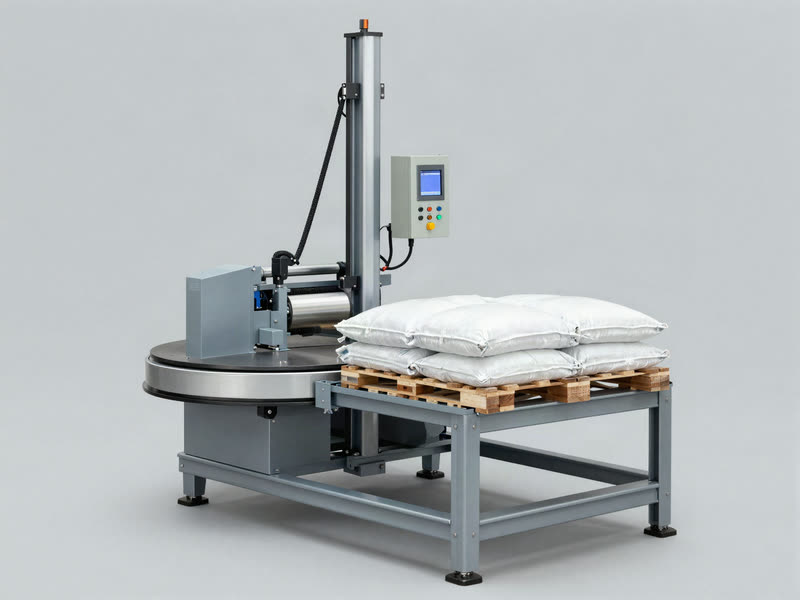
Envasado y paletizado
Soluciones completas de envasado, enfardado y paletizado. Equipos totalmente automatizados de operación simple para funcionamiento continuo, con alta productividad y bajo costo operativo, cubriendo un rango de pesos de 5 gramos a 2 toneladas.
China · Anlu, Hubei
Hubei YongXiang Agricultural Machinery Equipment, radicada en Anlu, provincia de Hubei — conocida como la capital china de la maquinaria de granos y aceites. Desarrollo y fabricación de maquinaria agrícola inteligente: sembradoras neumáticas, fertilizadoras y sistemas de control de siembra.
Por confirmar
Marca representada por TERRASOL. Consultanos por disponibilidad y líneas de producto.
Diseñamos el layout completo, seleccionamos el equipo según tu grano y tu rendimiento objetivo, y te acompañamos desde el montaje hasta el servicio post venta.